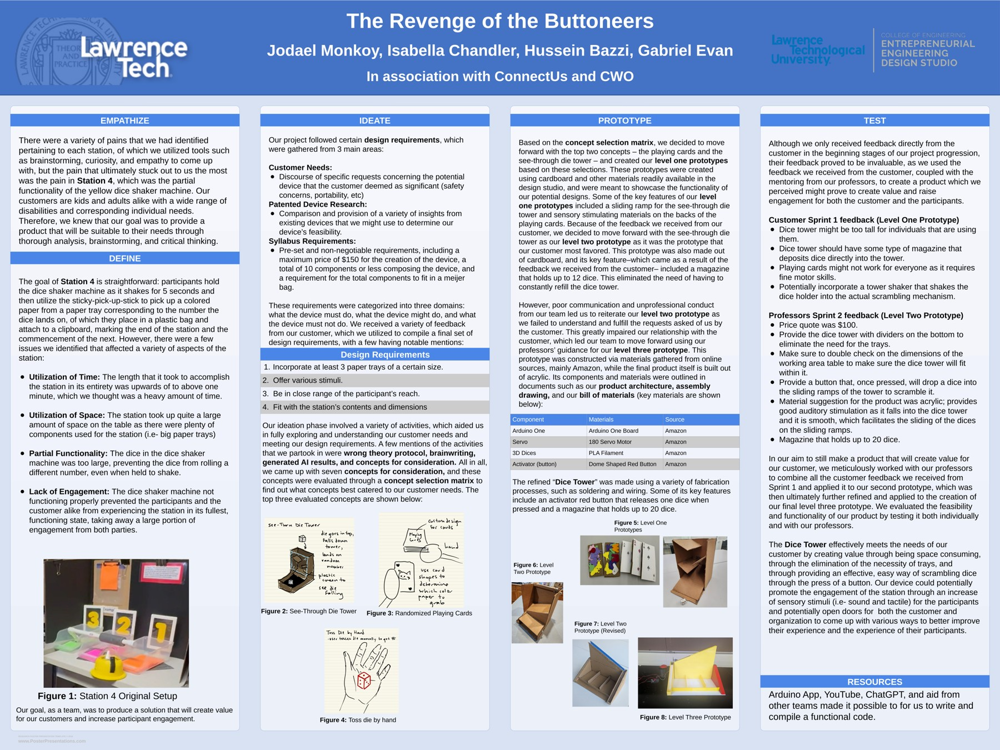

Customer need
The team focused on Station 4, where the original dice-shaker setup had issues with functionality, space, time, and participant engagement.
Entrepreneurial Engineering Design Studio
Accessibility-focused redesign of a dice activity station through customer needs, concept selection, rapid prototyping, testing, and expo presentation.

The team focused on Station 4, where the original dice-shaker setup had issues with functionality, space, time, and participant engagement.
Customer requests, existing-device research, and course constraints shaped requirements including safety, portability, component limits, and fit.
Feedback moved the team toward a see-through dice-tower concept with a push-button activator and a magazine for multiple dice.
Cardboard level-one concepts were narrowed through customer feedback, then refined into later functional prototypes.
The final concept incorporated an Arduino board, 180° servo, 3D-printed dice, and a dome-shaped push button.
The project involved soldering, wiring, acrylic/material decisions, prototype testing, and iterative refinement based on feedback.
Project archive
This material stays inside the case study so the main portfolio pages remain clean.

